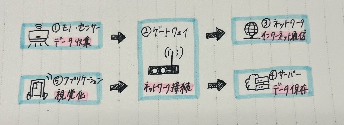
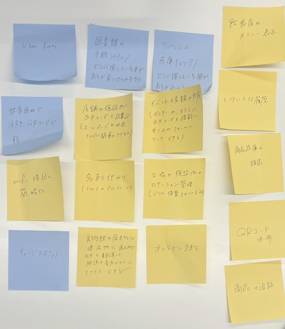

第一回
～ IoTに関して ～
－IoTとは？？－
IoT...「Internet of Things」の略語であり、「モノ」をインターネットに接続する技術のことである。
遠隔地から対象物を計測・制御したり、モノ同士で通信を行うことができる

IoTの対象となるモノには、センサーやカメラ、無線通信が搭載され、モノの動きや状態を感知し、データを取得する。
IoTの機能 ①モノの操作をする
②モノの状態を知る
③モノの動きを検知する
④モノ同士で通信する
－Iotで何ができそうか－
↓私たちの班ではQRコードを利用したIoTが多く挙がった

⇣ ⇣ ⇣
美術館の展示物にQRを配置して、解説や音声ガイドにアクセスする、
図書館の予約をネットを通して自宅から利用できるようにする、
施設内のロケーション管理（保管元がどこか）、
商品在庫の確認など...
《忘れ物防止シール》
↑自分で考えたアイディア
持ち物にICシールを付け、携帯アプリと連動
登録した場所（玄関）に行くと、
すべての持ち物の位置情報を読み取り、そろっているか確認してくれる
忘れていたら通知してくれて、忘れ物防止になる！